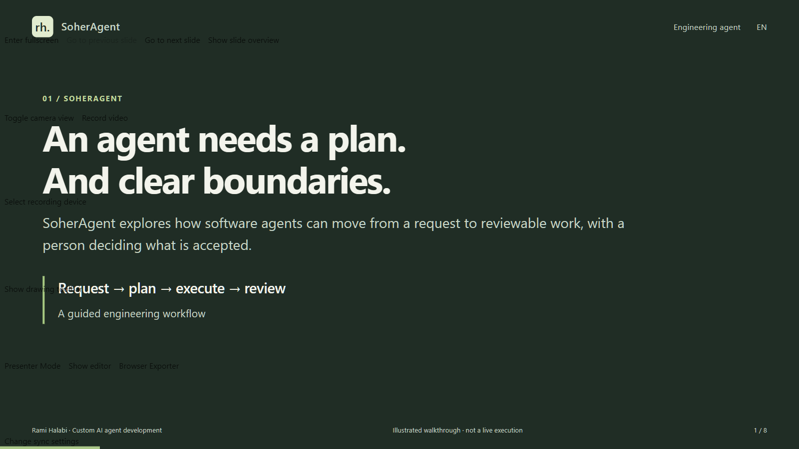
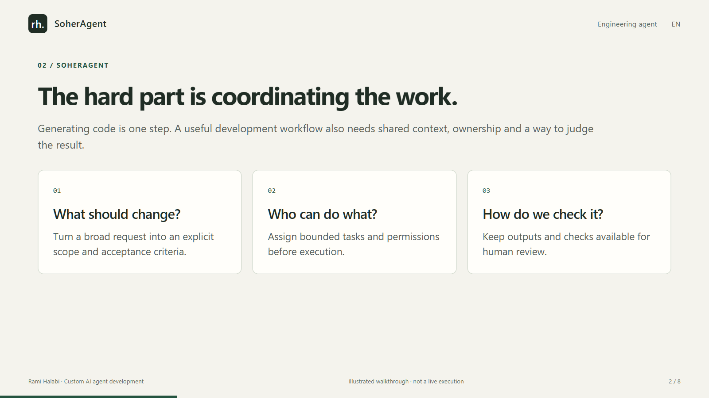
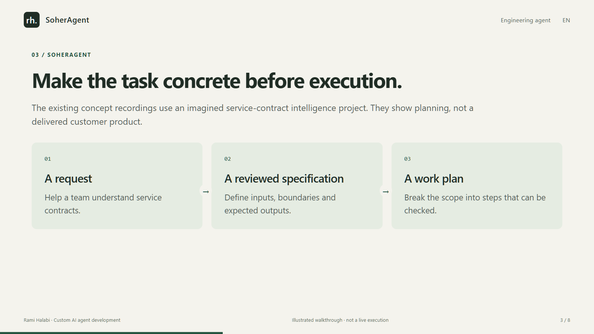
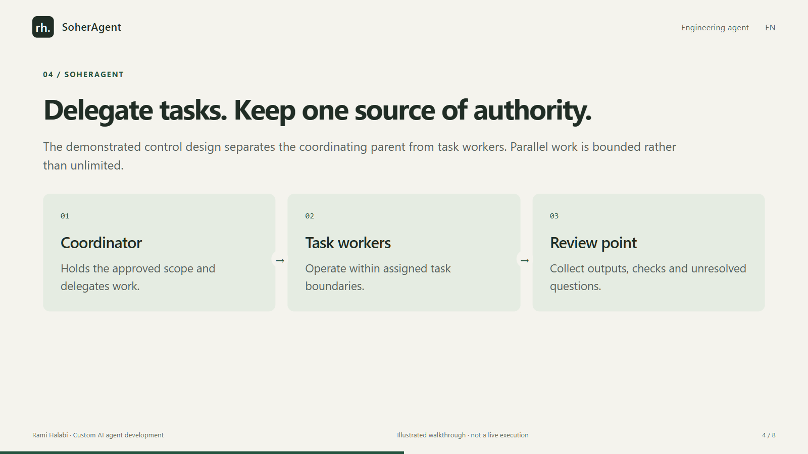
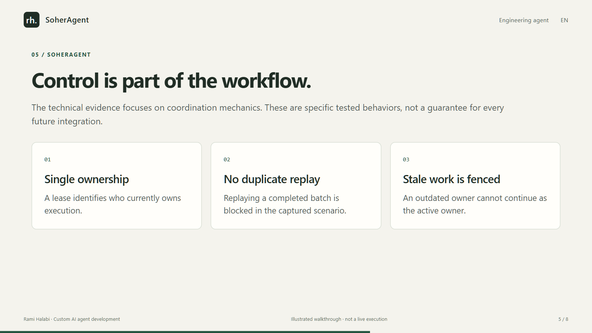
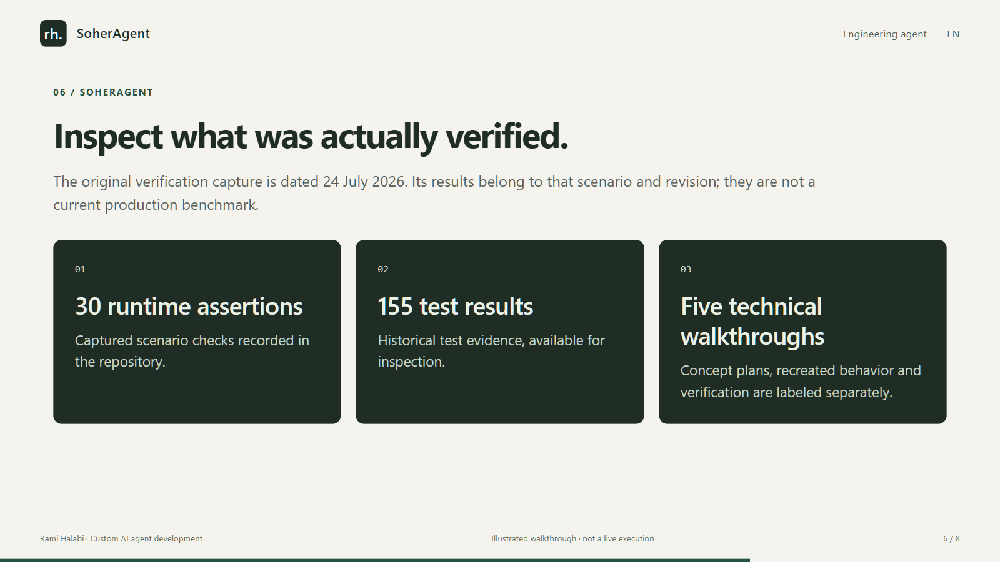
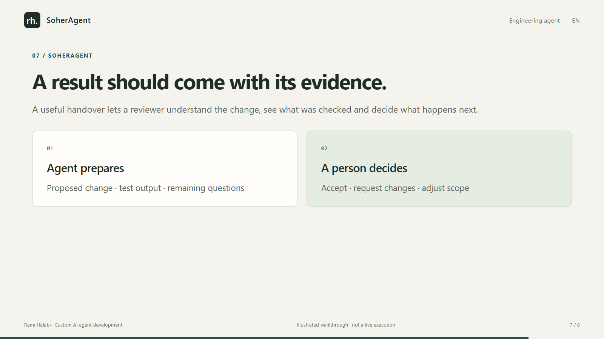
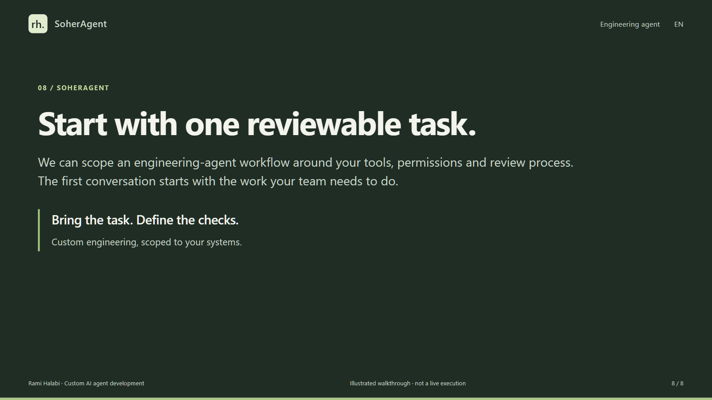

Silent presentation · 2:08
SoherAgent
Read the full presentation at your own pace. Every slide and its text are included below.
The presentation explains a proposed workflow. Separate recordings include concept plans, recreated behavior, and a dated runtime verification. This is not a deployed customer case study.
Slide 1 / 8 · 0:00–0:16
An agent needs a plan. And clear boundaries.
SoherAgent explores how software agents can move from a request to reviewable work, with a person deciding what is accepted.

- Request → plan → execute → review
- A guided engineering workflow
Slide 2 / 8 · 0:16–0:32
The hard part is coordinating the work.
Generating code is one step. A useful development workflow also needs shared context, ownership and a way to judge the result.

- What should change?
- Turn a broad request into an explicit scope and acceptance criteria.
- Who can do what?
- Assign bounded tasks and permissions before execution.
- How do we check it?
- Keep outputs and checks available for human review.
Slide 3 / 8 · 0:32–0:48
Make the task concrete before execution.
The existing concept recordings use an imagined service-contract intelligence project. They show planning, not a delivered customer product.

- A request
- Help a team understand service contracts.
- A reviewed specification
- Define inputs, boundaries and expected outputs.
- A work plan
- Break the scope into steps that can be checked.
Slide 4 / 8 · 0:48–1:04
Delegate tasks. Keep one source of authority.
The demonstrated control design separates the coordinating parent from task workers. Parallel work is bounded rather than unlimited.

- Coordinator
- Holds the approved scope and delegates work.
- Task workers
- Operate within assigned task boundaries.
- Review point
- Collect outputs, checks and unresolved questions.
Slide 5 / 8 · 1:04–1:20
Control is part of the workflow.
The technical evidence focuses on coordination mechanics. These are specific tested behaviors, not a guarantee for every future integration.

- Single ownership
- A lease identifies who currently owns execution.
- No duplicate replay
- Replaying a completed batch is blocked in the captured scenario.
- Stale work is fenced
- An outdated owner cannot continue as the active owner.
Slide 6 / 8 · 1:20–1:36
Inspect what was actually verified.
The original verification capture is dated 24 July 2026. Its results belong to that scenario and revision; they are not a current production benchmark.

- 30 runtime assertions
- Captured scenario checks recorded in the repository.
- 155 test results
- Historical test evidence, available for inspection.
- Five technical walkthroughs
- Concept plans, recreated behavior and verification are labeled separately.
Slide 7 / 8 · 1:36–1:52
A result should come with its evidence.
A useful handover lets a reviewer understand the change, see what was checked and decide what happens next.

- Agent prepares
- Proposed change · test output · remaining questions
- A person decides
- Accept · request changes · adjust scope
Slide 8 / 8 · 1:52–2:08
Start with one reviewable task.
We can scope an engineering-agent workflow around your tools, permissions and review process. The first conversation starts with the work your team needs to do.

- Bring the task. Define the checks.
- Custom engineering, scoped to your systems.